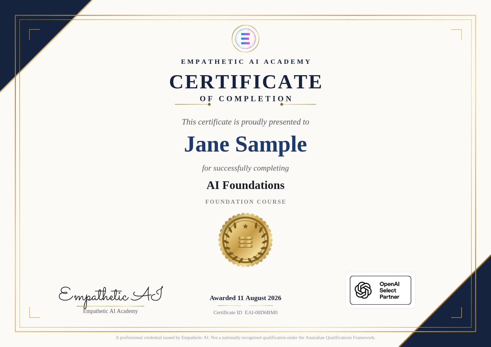
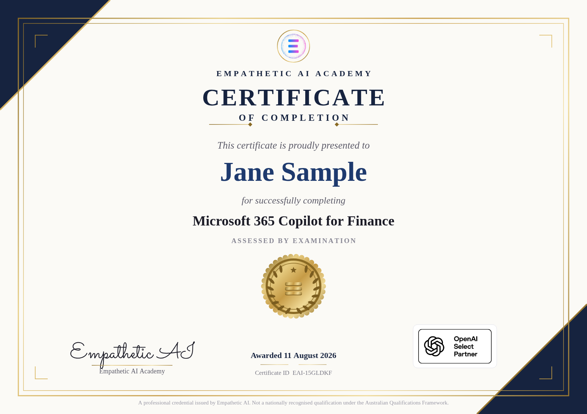

The paid courses: Course 1 · Copilot and Courses 2, 3 and 4.
What this course is for
A free course at the top of a funnel has one job that everybody agrees on and one that most people get wrong.
The obvious job is to be genuinely useful. If someone gives us eighty minutes and leaves with nothing, we have not made a sale, we have spent trust. Given how much of your positioning rests on being trusted, a thin free course is the most expensive thing we could publish.
The job people get wrong is the second one, which is to make the paid courses feel necessary. The instinct is to hold something back. That is exactly backwards, and it reads as withholding, which is the one impression we cannot afford. What actually works is to teach one thing properly and let the learner run into the edge of it themselves. By lesson five they will have interrogated a real document and got a real answer, and they will also have noticed that they do not yet know how to do that reliably, at scale, or in a way they could defend to a partner. That gap is real, we do not have to manufacture it, and Courses 1 to 4 are the honest answer to it.
So this course teaches one complete, useful skill and is straight about what it has not covered.
Reading and drafting used to be the bottleneck in professional work. They are not any more. Verification is the bottleneck now. Which means the valuable skill is not writing clever prompts, it is knowing how to check an answer quickly enough that speed is still worth having.
Everything else in the Academy hangs off that sentence. It is worth planting it in the free course rather than saving it, because it is the idea that makes someone think Empathetic AI is worth paying.
The course at a glance
| # | Lesson | Time | What it does for us |
|---|---|---|---|
| 1.1 | Why AI matters for your work | 10m | Installs the verification idea |
| 1.2 | Copilot vs ChatGPT vs OpenAI Enterprise | 14m | Answers the question everyone actually arrives with |
| 2.1 | What AI is good at, and what to avoid | 12m | One test they will remember |
| 2.2 | Responsible use and professional judgement | 15m | Your five red lines, first contact |
| 3.1 | Your first practical workflow | 16m | The one they tell a colleague about |
| 3.2 | Where to go next | 13m | Honest diagnostic, not a pitch |
Lesson titles are the ones already in the catalog, so nothing downstream breaks. I have kept them.
Module 1 · What this actually is
2 lessons · 24 minutes. Clearing away the two things that stop people starting: not knowing what changed, and not knowing which tool they are supposed to be using.
1.1 Why AI matters for your work
What you will be able to doSay precisely which parts of your own work this changes, and which parts it does not, without either overclaiming or dismissing it.
The ideaMost explanations of AI for professionals are either breathless or defensive, and neither helps you decide what to do on Monday. The useful version is narrower.
For most of your career the slow parts of knowledge work were reading and drafting. Reading the fifty page agreement. Writing the first version of the memo. Getting the messy data into a shape you could look at. Those were the bottleneck, and seniority was partly a measure of how fast you could get through them.
Those three things are now fast. Not perfect, but fast. Which means the bottleneck has moved, and it has moved to checking. The constraint on your work is no longer how quickly you can produce a draft, it is how quickly you can satisfy yourself that a draft is right.
That single relocation explains almost everything else. It explains why the professionals getting value are not the ones with the cleverest prompts, but the ones with the fastest verification habits. It explains why AI helps most on tasks where checking is cheap, like finding a clause you can then go and read, and helps least on tasks where checking is expensive, like a judgement call with no source to check against. And it explains why the rest of this Academy spends so much time on how to check things.
Do thisWrite down three tasks from last week. For each, answer one question: if a competent colleague handed me this finished, how long would it take me to satisfy myself it was right? The tasks with short answers are where you should start. The ones with long answers are where you should be careful.
TakeawayDrafting got cheap. Checking did not. Start where checking is cheap.
1.2 Copilot vs ChatGPT vs OpenAI Enterprise
What you will be able to doWork out which tool your firm should be using, and understand why the difference matters more for confidentiality than for capability.
The ideaPeople assume these are competing products that do different things well. Mostly they are not. The underlying capability is similar enough that for the work in this course you would barely notice. What differs, and it differs enormously, is what the tool can see and where your data goes.
| What it can see | Where your data goes | Best when | |
|---|---|---|---|
| Microsoft 365 Copilot | Your own files, email, Teams and calendar inside your tenant | Stays within your Microsoft tenant, under your existing controls | Your firm already runs Microsoft 365 and the work involves your own documents |
| ChatGPT, personal account | Only what you paste into it | Outside your firm entirely | Nothing confidential. Genuinely useful for learning and for public information |
| ChatGPT Enterprise / OpenAI Enterprise | Only what you give it, plus anything you deliberately connect | Under a commercial agreement, with your data not used for training | You want the strongest general capability with contractual data controls |
The thing worth understanding is that Copilot's advantage and its risk are the same fact. It can see your files, which is why it is useful without you pasting anything, and it is also why "it can see your files" is a sentence your risk committee will want to talk about. Access inside a tenant follows existing permissions, which means Copilot inherits whatever your permissions already were, including the ones nobody has reviewed since 2019.
One distinction that catches people out. Having Microsoft 365 and having Copilot are not the same thing. Copilot is a paid add-on licence on top of your existing subscription, and a firm can be fully on Microsoft 365 with nobody holding a Copilot seat. If you open Word expecting a Copilot button and there is nothing there, that is not a fault, it is a licensing question for whoever manages your subscription. It is worth checking before you start Course 1, because the exercises assume you can actually open the thing.
Knowledge check, end of Module 1. A colleague pastes a client's draft contract into a personal ChatGPT account to ask what the termination clause means. What is the problem?
A. ChatGPT is not capable enough for legal text
B. Confidential client material has left the firm's control, and it does not matter how good the answer was
C. They should have asked a lawyer
Answer: B. The capability is not the issue. The tool is the issue, and the same question inside the firm's own Copilot or an enterprise agreement would have been fine.
Module 2 · Using it well
2 lessons · 27 minutes. One test that predicts when it will fail, then the five situations where it should not be used at all.
2.1 What AI is good at, and what to avoid
What you will be able to doPredict, before you ask, whether you are likely to get a reliable answer.
The ideaThere is a long list of strengths and weaknesses you could memorise. There is also one question that predicts most of it:
Am I giving it the source, or asking it to remember?
Giving it the source means the answer is in the material you supplied: find the termination clause in this contract, turn these notes into a table, rewrite this paragraph for a client. These work well, and more importantly, when they fail you can see it, because the source is right there.
Asking it to remember means the answer has to come from somewhere inside the model: what is the current threshold for X, what did that standard say, what is the case law on Y. These fail differently and much worse. Not with an error message, but with a fluent, well-structured, entirely plausible answer that is wrong. It will invent a section number with the same confidence it quotes a real one.
This is also why the arithmetic question comes up. It is not that these tools cannot calculate, it is that a language model producing a number is remembering what a number looks like rather than computing it. Give it a spreadsheet and ask it to work in the spreadsheet, and you are back in the first category.
Do thisAsk the same question twice. Once with the document attached, once without. Compare. The version without the source will often look better written, which is precisely the trap.
TakeawaySupply the source. When you cannot supply the source, treat the answer as a lead to check, never as a finding.
2.2 Responsible use and professional judgement
What you will be able to doRecognise the five situations where AI should not be making the running, and explain to a colleague why.
The ideaEverything up to here has been about getting good output. This lesson is about the cases where good output is not the point, because the problem is not accuracy, it is accountability. These five are Empathetic AI's position and they are taught in every course rather than collected at the end of one.
Notice what these five have in common. Not one of them is about the technology being bad. Every one is about where responsibility sits. That is why they do not change as the tools improve, and it is why they are worth learning now rather than waiting to see how good the next model is.
Do thisTake the three tasks you wrote down in lesson 1.1. Mark any that touch one of the five. Those are not off limits, but they are the ones where the checking step is not optional.
Knowledge check, end of Module 2. Which of these is closest to a red line?
A. Using AI to draft a client email that you then edit and send
B. Using AI to summarise a public accounting standard so you know where to look
C. Using AI to decide which invoices to approve for payment, automatically
Answer: C. Red line 5. A and B are ordinary use with a human in the loop. C removes the person who would have been accountable.
Module 3 · Doing it yourself
2 lessons · 29 minutes. One complete workflow they run on their own material, then an honest account of what this course did not teach them.
3.1 Your first practical workflow
What you will be able to doGet reliable, checkable answers out of a long document in about ten minutes, on your own material, today.
The ideaThis is the lesson people will tell a colleague about, so it has to work on the first try. We pick document interrogation because it is the highest value thing a beginner can do safely: the source is supplied, so we are on the right side of lesson 2.1, and checking is cheap, so we are on the right side of lesson 1.1.
The instinct is to ask for a summary. Do not. A summary flattens exactly the exceptions and carve-outs that matter, and you have no way of seeing what it left out. Ask narrow questions instead, one at a time, and make it show you where each answer came from.
Do thisTake a real document you have to get through. A contract, a policy, a tender, a long report. Attach it and use this:
The four questions should be the four you would otherwise have had to find by hand. That is the whole trick: you are not asking it to understand the document, you are asking it to find things in it.
Check thisOpen the document at each quoted page number and read the sentence. This takes two minutes and it is not optional. It catches the failure that matters most here, which is a real sentence attached to the wrong location, or a quoted line that has been subtly tidied up.
Do this on three documents and you will have a calibrated sense of how much to trust it, which is worth more than any amount of being told.
Narrow questions, quoted sources, and you open the document yourself. Never a summary you cannot audit.
3.2 Where to go next
What you will be able to doDecide what to learn next based on your own situation, including deciding that you have enough for now.
The ideaThis lesson is written as a diagnostic, not a pitch, and I would keep it that way even though it is the conversion lesson. Someone who has just spent eighty minutes with us can tell the difference immediately, and the version that respects them converts better anyway.
Start with what this course deliberately did not cover, said plainly:
- How to get the same answer reliably, rather than a good answer once.
- How to do this at volume, on twenty documents rather than one.
- How to work inside your own files and email rather than uploading things.
- What to do when you want a process to run without you.
- How to put a policy around any of this so a firm can use it rather than an individual.
Then the routing, which is genuinely about their situation:
| If you are... | Go to | Because |
|---|---|---|
| Sitting in a Microsoft 365 firm, wanting to speed up your actual job | Course 1, Copilot for Finance | Built on the tool already on your desk, around five real finance jobs |
| Finding the answers good but inconsistent, and wanting to defend them | Course 2, Prompting | This is the verification skill from lesson 1.1, taught properly |
| Doing the same task repeatedly and wondering if it could run itself | Course 3, AI Agents | What should run without you, and what must not |
| Responsible for other people using this | Course 4, Governance | The policy, the register and the evidence trail |
| Wanting to be taught it live, with your own work in front of you | The live workshop | Half a day, hands on, with Tristan |
And an honest fifth option: if what you needed was to stop feeling behind, you have that now, and you can leave. People who are told they can leave come back.
TakeawayYou can now get checkable answers out of a long document. The next question is whether you need that to be reliable, repeatable, or governed.
The certificate question
Every course in the Academy currently issues a certificate, and that includes this one. I think that is worth a moment, because it touches the trust point you raised about the affiliate programme.
If a free eighty minute course produces the same artifact as a A$590 assessed course, the A$590 certificate quietly loses meaning. Nobody complains, it just stops being worth anything on a LinkedIn profile, and the paid ones are the ones you need to be worth something.
My recommendation is that this course issues a certificate, because it is a genuine reason to finish and it spreads, but a visibly different one. The paid certificates carry the line "assessed by examination and submitted work". This one should not, because it is not true here. Same design, same pride in sharing it, different and honest wording.
Rendered from the live code, not a mock up. Sample name used.
Free course

Paid course

What I need from you
The naming question.Decided: dropped, now AI Foundations.What your clients actually run.Answered: mostly Microsoft 365 and Copilot. Lesson 1.2 rewritten to say it plainly, and Course 1 stays built on Copilot. One follow-up left in the gold box there: whether those firms hold paid Copilot licences or just Microsoft 365, which are not the same thing.The certificate decision.Decided: differentiated, and built.
None of these block anything. The course is drafted and ready to build whenever the four paid ones are.